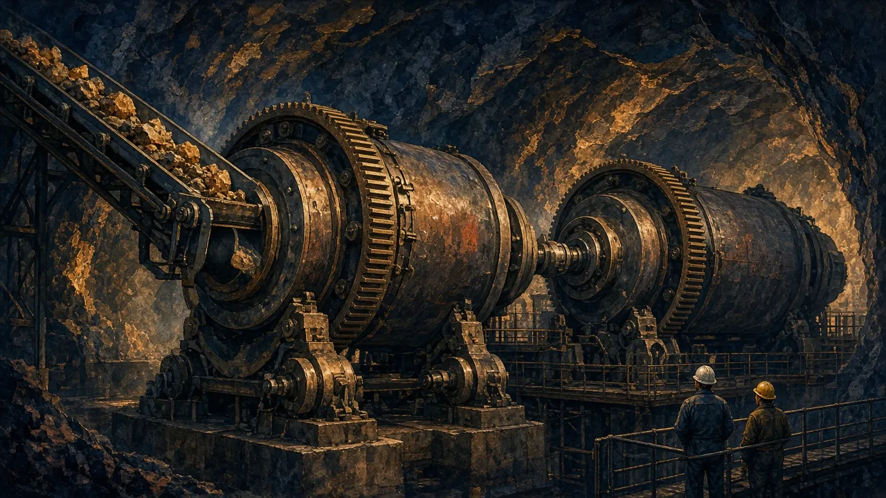
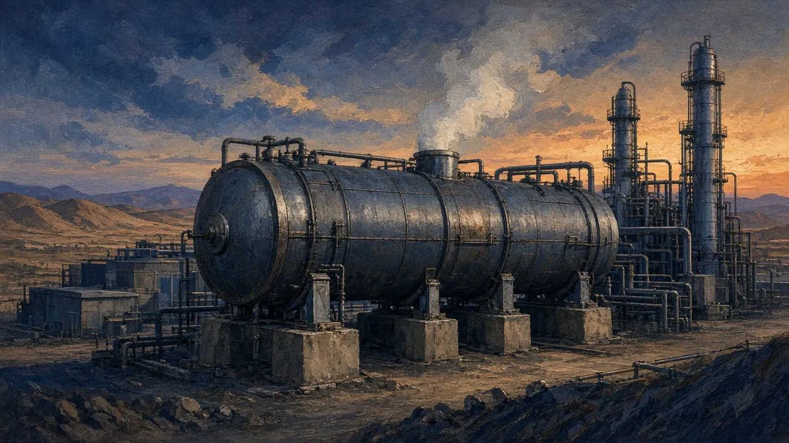

- Compute NSR per tonne of ore from grade, recovery, payability, price and smelter terms
- Distinguish free-milling from refractory gold and oxide from sulphide copper, with their cost consequences
- Normalise lithium prices and units (SC6, Li₂O, LCE)
On this page
Contained metal is not payable metal
A resource tells you the metal in the ground. Shareholders are paid on metal sold, after the plant loses some, the smelter keeps some, and the freight company, the government and the royalty holder take their cuts. The bridge from one to the other is the most useful single calculation in mining.
NSR/t = grade × recovery × payability × price − (TC/RC + freight + royalties) per tonne
Compare NSR/t with the mining + processing + G&A cost per tonne. If NSR/t is below cost, the rock is waste, whatever the headline grade says.
Comminution: the energy bill
Most processing cost is spent crushing and grinding (comminution) the ore fine enough to liberate the valuable minerals. Harder ore (high Bond work index) needs more power and grinding media and lowers throughput. Fresh rock below the oxide zone is usually much harder (Module 4), so a plant designed on oxide ore can underperform in year three.

Gold: free-milling vs refractory
- Free-milling: gold is liberated by grinding and dissolves in cyanide. CIL/CIP (carbon-in-leach/pulp) plants recover about 90%+, then elution, electrowinning and smelting produce doré bars.
- Refractory: gold is locked inside sulphides (pyrite, arsenopyrite), so cyanide cannot reach it. The sulphides must be oxidised first by pressure oxidation (POX), bio-oxidation (BIOX) or roasting. That adds capex, operating cost and technical risk.
- Preg-robbing: carbonaceous material in the ore "steals" dissolved gold. It needs special treatment.
Hemi's ore is sulphide-hosted and partly refractory. The DFS flowsheet is flotation + pressure oxidation + CIL ✔. A float concentrate is oxidised in an autoclave, then leached. This explains part of the A$1.3bn capex, and why recovery testwork by ore domain was a key due-diligence item.

Copper: oxide vs sulphide
- Oxide ores are heap-leached with acid, then go through solvent extraction and electrowinning (SX-EW) to make LME-grade cathode on site. There are no smelter terms, but the method only suits oxide (and some secondary sulphide) ore.
- Sulphide ores are floated to a concentrate (typically 20–40% Cu) and sold to a smelter. The miner is paid for payable metal, minus treatment and refining charges (TC/RC).
Payables and penalties
| Metal in concentrate | Typical payable | Minimum deduction |
|---|---|---|
| Copper | ~96–96.5% | 1 unit (1 percentage point of concentrate grade) |
| Gold in Cu concentrate | ~90–97% | Sliding scale by grade |
| Zinc | ~85% | 8 units |
| Lead | ~95% | 3 units |
| Nickel concentrate | ~70–80% | – |
Penalties apply to deleterious elements such as arsenic, fluorine, mercury, bismuth and cadmium. A high-arsenic concentrate can be hard to sell at all.
The annual benchmark copper concentrate TC/RC fell to US$0/t and 0¢/lb for 2026, from US$21.25/t and 2.125¢/lb in 2025. Spot TCs went negative as smelter capacity outgrew mine supply ✔. For miners this is a revenue gain. For smelters it is a crisis. It shows that the "cost" lines in the NSR equation are market prices too.
- 1.5% Cu head grade, 90% recovery: 13.5 kg Cu per tonne of ore reports to concentrate.
- 26% Cu concentrate: 13.5 ÷ 0.26 = 51.9 kg of concentrate per tonne of ore.
- Payable: the deduction is the greater of 3.5% × 26 = 0.91 units and the 1-unit minimum, so it is 1 unit. Payable Cu = 25/26 × 13.5 = 12.98 kg.
- Revenue at US$14,600/t: 0.01298 × 14,600 = US$189.5/t ore.
- TC/RC (2026): US$0. Freight at US$90/wmt with 8% moisture: 0.0519 ÷ 0.92 × 90 ≈ US$5.1.
- Royalty at 5% of NSR: ≈ US$9.2.
- NSR ≈ US$175/t of ore. Against a mining + processing cost of US$35/t, that is a very healthy margin.
Copper is ≈US$14,600–14,700/t LME cash as of 29 Oct 2026 ✔. At 2025 terms, add about US$1.1 TC + US$0.6 RC per tonne of ore.
Ivanhoe's Kamoa-Kakula (DRC) normally feeds ≈4.9–5.1% Cu. In June 2025, after the seismic event at Kakula, the mill ran on stockpiles at 3.3% Cu and 79% recovery ✔. Ivanhoe noted that its production figures are reported "before refining losses or payability deductions" ✔. Same mine, very different NSR per tonne.
Lithium: units and grade normalisation
Lithium is quoted in a confusing range of units. Always normalise before comparing.
- Li → Li₂O: ×2.153; Li₂O → Li: ×0.4646
- Li → LCE (lithium carbonate equivalent): ×5.323
- Li → LiOH·H₂O: ×6.046
- SC6 = 6% Li₂O spodumene concentrate ≈ 2.79% Li
- 31.1035 g per troy ounce; 2,204.62 lb per tonne; wmt vs dmt (wet vs dry metric tonnes)
PLS's FY23 average realised price of US$4,447/dmt was quoted CIF China on an ≈SC5.3 basis. Normalised to SC6, that is about US$5,030/dmt ✔. Comparing it directly with an SC6 FOB price from another producer understates PLS by more than 10%.
SC6 spodumene was about US$2,250/t FOB in Oct 2026, according to a single dashboard source ✔. Check Fastmarkets or Benchmark before relying on it.
Other processing routes (one line each)
- Nickel laterites: limonite ore goes to HPAL (high-pressure acid leach) → MHP. HPAL is notoriously hard to ramp up. Saprolite goes to RKEF → nickel pig iron (NPI) or matte (Indonesia's model).
- Uranium: ISR (in-situ recovery) pumps solutions through permeable sandstone and needs no mining. Conventional mills leach crushed ore (Langer Heinrich).
- Rare earths: concentrating is the easy part. Separation into individual oxides is the hard, high-value part (Lynas).
- Ore sorting: sensors reject waste before the mill. PLS's P680 project is an example.
BHP's Ravensthorpe HPAL nickel project in WA is often cited as a cautionary tale of HPAL ramp-up and write-downs unverified.
- Flowsheet: flotation → POX → CIL (partly refractory sulphide ore).
- Value chain: grade (1.5 g/t reserve) × recovery × ~99.9% doré payability × A$ gold price.
- Key risks: recovery variability by ore domain; autoclave availability during ramp-up; power and oxygen costs.
- Analyst question: what recovery did the DFS assume for each domain, and how much testwork supports it?
- Recovery assumptions with no variability testwork across ore types
- A novel flowsheet (first-of-a-kind DLE, HPAL) on a study timetable
- Concentrate penalties (arsenic) ignored in the study
- Prices compared across different grades or delivery terms (SC5.3 CIF vs SC6 FOB)
Practice tasks
Checkpoint quiz
Score 80% or more to mark this module mastered. Your best score is saved in this browser.